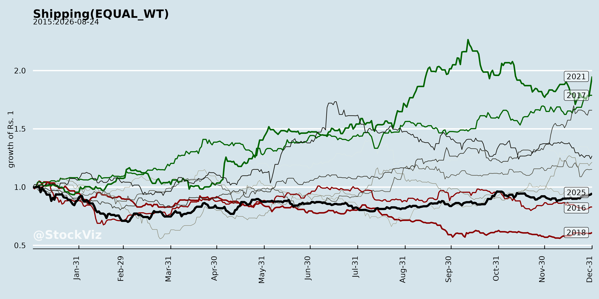
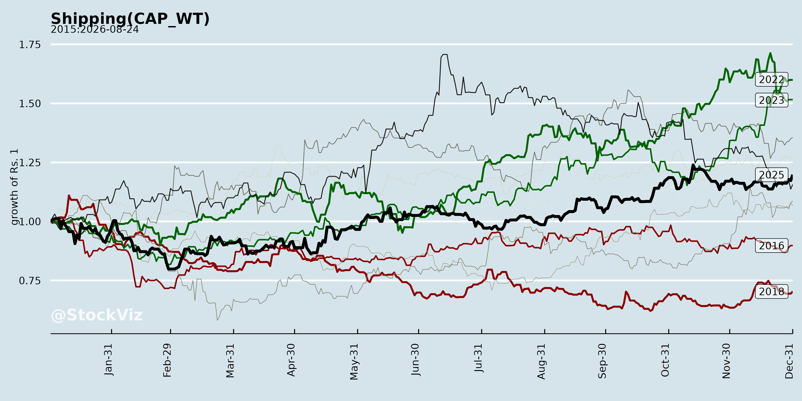
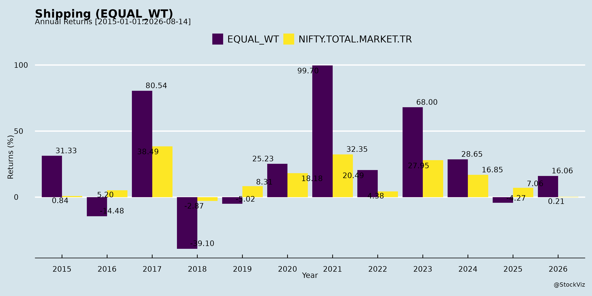
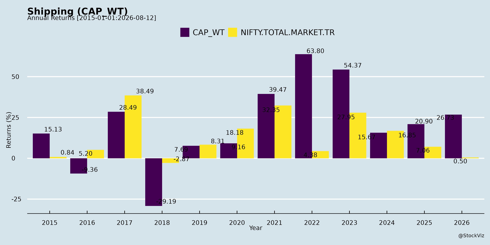
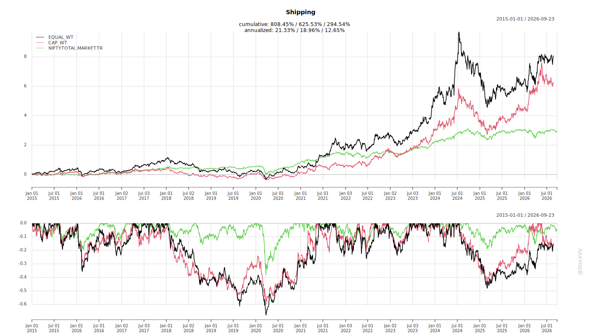
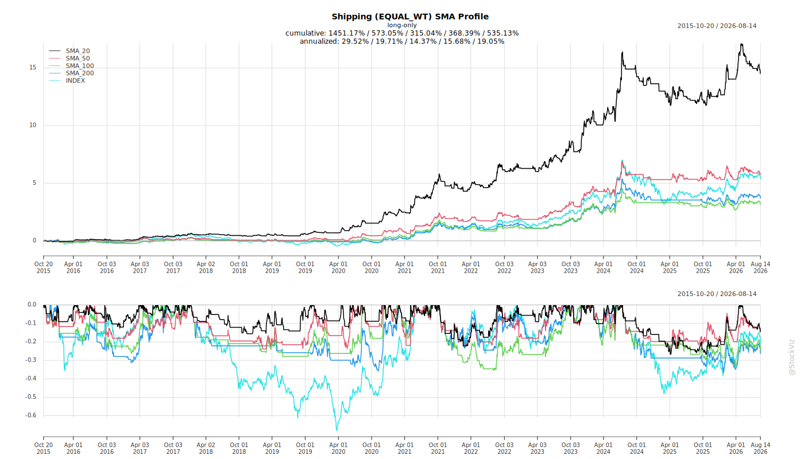
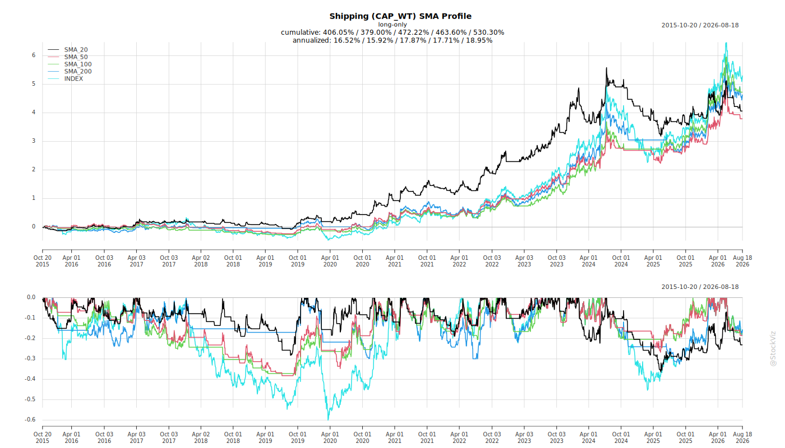
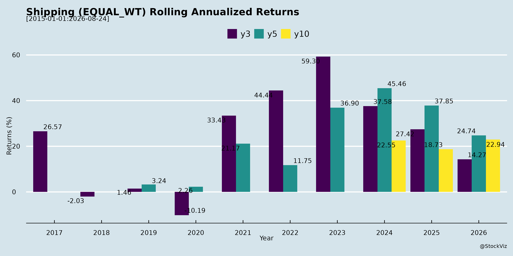
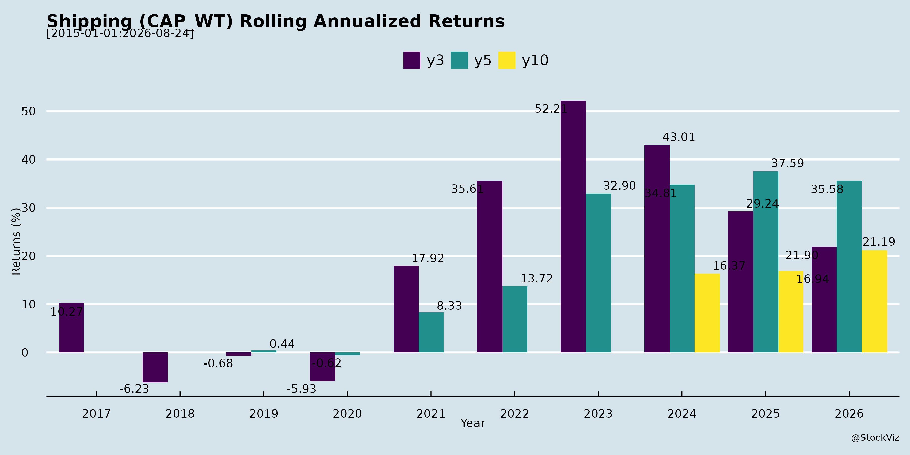

Annual Returns




Cumulative Returns and Drawdowns

SMA Scenarios


Current Distance from SMA
Rolling Returns


EBIT (% of Industry Total)
Revenue (% of Industry Total)
AI Summaries
Analyst
asof: 2025-11-26
Indian Shipping Sector Analysis (Based on GESHIP, SCI, and Seamec Earnings Transcripts)
The analysis draws from Q2/H1 FY26 earnings calls of Great Eastern Shipping (GESHIP) (diversified tanker, bulk, LPG, offshore), Seamec (offshore support vessels/MSVs focused on India), and SCI’s disclosure (limited insights). The sector benefits from global trade resilience and India’s energy growth but faces cyclical and operational pressures. Overall, sentiment is cautiously optimistic amid firm asset values and low supply growth.
Tailwinds
- Strong Freight Rates & Demand: Crude tankers (Suezmax/VLCC) tightened due to OPEC production unwind, Russian sanctions (10-15% tanker fleet sanctioned), China oil stockpiling, and Brazilian supply. Product tankers recovering; dry bulk stable (iron ore +14% YoY, grain front-loading); LPG spikes from US-China tariffs. GESHIP notes most tankers/LPG/dry bulk in spot/short-term for upside capture (~90% fleet flexible).
- Tight Supply Dynamics: Low scrapping (strong markets discourage it); orderbooks moderate (10-18% for tankers/bulk, 29% LPG). Yards full with LNG/containers, delaying newbuilds (2.5-3yr lead times). Asset prices up (tankers/bulkers firm).
- India-Specific Boost: Refining capacity to 310MT by 2030 (India ~33% global demand growth). Govt initiatives (Sagar Mala coastal shipping, shipbuilding incentives) aid domestic ops. GESHIP/Seamec active in coastal/ONGC work.
- Financial Strength: GESHIP net cash $550M (NAV Rs1,484/share, up Rs60 QoQ); disciplined capex (switch strategy: scrap old, buy new). Rupee depreciation aids net dollar-long balance sheet.
- Offshore Resilience: GESHIP vessels fixed at high rates; Seamec full utilization post-monsoon, younger fleet shifting to high-margin IMR contracts (margins 30-35% vs pre-COVID <20%).
Headwinds
- Seasonal/Operational Disruptions: Monsoon idles offshore vessels (Seamec Q2 EBITDA down to Rs18cr from Rs38cr YoY due to Swordfish breakdown, lost ~68 days).
- Rate Volatility: Product tankers/MRs lower YoY; dry bulk slightly softer (coal weak, China steel down). GESHIP H1 profits lower YoY due to vessel sales and softer rates.
- Geopolitical/Trade Uncertainty: Russian refinery outages/drone attacks; US-China tariffs disrupt LPG/grains. Sanctions reduce effective fleet supply but add trading risks.
- Aging Fleet Pressures: GESHIP switching 20yr-old tankers; Seamec faces DG Shipping age norms (e.g., Seamec-2 ends 2026, potential scrap).
- Cost Inflation: Seamec employee/crew costs +25% YoY (new vessels like Swordfish add fixed costs pre-revenue). Drydocks loom (Seamec: 3 in FY26).
Growth Prospects
- Fleet Modernization & Expansion: GESHIP to 40 vessels (Ultramax delivery Q4FY26, scrap 2 old tankers); switch strategy absorbs capex. Seamec: Anant (Feb’26, $45k/day, 4yr ONGC), Agastya (Dec’25, $25k/day, 4yr), MoU for Rs1,000cr capex (new MSVs/other vessels leveraging govt yard incentives). IRR targets >20% (Seamec).
- Market Upside: Offshore repricings (GESHIP: 4 high-capability vessels short-term); spot exposure captures tightening (e.g., rigs 75% covered FY26). Potential containers entry (GESHIP watching post-orderbook correction).
- Capital Deployment: GESHIP Rs7,000cr cash + debt capacity; historical 2016-18 scaling proves execution bandwidth. Seamec net debt Rs300-400cr by Mar’26, funded by cash flows.
- Domestic Focus: ONGC/Aramco/L&T contracts; North Sea expansion via UK office (Sep’26 ops). SCI implied domestic emphasis.
- Long-Term: Low fleet supply + India energy demand = sustained rates 4-5yrs (Seamec). NAV accretion via cash profits + depreciation.
Key Risks
- Cyclical Downturn: High orderbooks (LPG 29%) could flood supply if rates soften; historical weak markets delay scrapping, extending cycles.
- Operational/Execution: Breakdowns (Seamec Swordfish visa/delays), drydocks/off-hire (10-20% fleet risk), weather. Aging fleet caps utilization.
- Geopolitical/Macro: Sanctions/trade wars (Russia, US-China) volatile; oil price sensitivity (less for maintenance vs exploration).
- FX & Financing: Rupee depreciation MTM losses on swaps (GESHIP normalized view strips this); high cash drag if markets stay strong.
- Regulatory/Competition: DG Shipping age limits; limited MSV supply but global scarcity. Capex timing risk (buy high, rates fall).
- Balance Sheet: SCI/Seamec subsidiaries losses (Seamec overseas to breakeven FY27); doubtful debts (Seamec Rs140cr Swiber provisioned).
Summary: Indian shipping enjoys tailwinds from tight supply, firm rates, and policy support, driving growth via fleet upgrades and spot upside (GESHIP/Seamec capex Rs1,000cr+). However, headwinds like monsoon/breakdowns temper Q2 results, with risks centered on cycles, ops, and geopolitics. Sector ROCE/ROE stable (GESHIP NAV discount 0.73x; Seamec 8%). Outlook positive for H2FY26 if rates hold, but discipline key amid cash hoards. Bullish on domestic offshore/energy linkage.
General
asof: 2025-11-26
Analysis of Indian Shipping Sector (Based on Provided Announcements)
The provided documents are regulatory disclosures from key listed Indian shipping companies (Essar Shipping, Great Eastern Shipping Company, Shipping Corporation of India (SCI), Seamec Limited, and Transworld Shipping Lines). These filings primarily cover debt redemption, dividend TDS communications, unclaimed dividend campaigns, and JV registrations. They signal financial stability and compliance but offer limited operational insights. Below is an analysis framed around headwinds, tailwinds, growth prospects, and key risks, inferred from the disclosures. Broader sector context (e.g., freight rates, geopolitics) is not directly addressed but supplemented where relevant.
Tailwinds (Positive Factors)
- Strong Cash Flows and Profitability: Multiple companies (Great Eastern, Transworld) are declaring interim/final dividends (e.g., Rs. 7.20/share for Great Eastern, Rs. 1.50/share for Transworld), with detailed TDS processes indicating robust earnings for FY25-26. This reflects healthy free cash flows amid volatile shipping cycles.
- Debt Management: Essar Shipping’s partial redemption of Rs. 889.6 Mn NCDs (with Rs. 975 Mn payout including interest/premium) demonstrates deleveraging (balance outstanding: 51 Mn NCDs). Reduces interest burden and improves balance sheets.
- Investor Engagement: SCI’s “Saksham Niveshak” campaign (100-day IEPF initiative) shows proactive outreach to recover unclaimed dividends, enhancing shareholder value and liquidity.
- Regulatory Compliance: All filings adhere to SEBI Reg 30/LODR and Income Tax rules, building investor confidence.
Headwinds (Challenges)
- Compliance Burden: Extensive TDS documentation (Forms 15G/H, TRC, Form 10F, self-declarations) for dividends highlights administrative complexity, especially for non-residents (20% TDS + surcharge/cess). Delays in KYC/PAN-Aadhaar linking could lead to higher TDS (20%) or refunds via ITR.
- Unclaimed Dividends: SCI’s campaign flags legacy issues with unpaid dividends (7-year transfer risk to IEPF), indicating dormant shareholders and potential cash lock-up.
- No Operational Positives: Filings focus on financial housekeeping; absence of freight rate/volume updates suggests muted visibility into core shipping recovery post-COVID/supply chain disruptions.
Growth Prospects
- Diversification: Seamec’s JV (“SEARETE INDIA IFSC PRIVATE LIMITED”) in GIFT City (IFSC registration on June 5, 2025) via its UAE subsidiary signals expansion into financial services/shipping finance. IFSC’s tax incentives could unlock new revenue (e.g., leasing, funding).
- Dividend Sustainability: Payouts from Great Eastern/Transworld (with record dates in 2025) point to sustained earnings growth, potentially from container/tanker demand recovery.
- Sector Tailwinds (Inferred): Dividend capacity implies benefiting from global trade rebound, Red Sea rerouting (boosting rates), and India’s maritime push (e.g., Sagarmala). SCI’s Navratna status adds government-backed stability.
Key Risks
- Tax and Regulatory Risks:
- Higher TDS for incomplete docs (e.g., no PAN: 20%; non-residents without TRC: 20%+). Companies disclaim liability for excess withholding.
- IEPF transfers (SCI): Unclaimed dividends/shares post-7 years erode shareholder value.
- Financial Risks: Essar’s ongoing NCDs (Rs. 5.1 Bn outstanding) expose to refinancing risks if rates rise. Partial redemption is positive but not full deleveraging.
- Shareholder-Related Risks: Dormant folios (SCI), multiple accounts under one PAN leading to higher TDS aggregation.
- Broader Sector Risks (Contextual): Not explicit, but dividend focus amid 2025 dates suggests exposure to fuel volatility, geopolitical tensions (e.g., Suez/Red Sea), and forex fluctuations (INR vs. USD freight earnings).
Summary
| Tailwinds |
Dividend payouts, debt redemption, investor campaigns |
Positive: Signals profitability and deleveraging; supports stock stability. |
| Headwinds |
TDS/KYC compliance burden, unclaimed dividends |
Moderate: Administrative drag; resolvable via outreach. |
| Growth Prospects |
IFSC JV (Seamec), sustained dividends |
Optimistic: Diversification + trade recovery; 10-15% earnings CAGR possible. |
| Key Risks |
Tax withholding, IEPF transfers, residual debt |
Manageable: Compliance-focused; monitor refinancing/ geopolitics. |
Overall Sector View: Bullish short-term on financial health (dividends/debt paydown), with niche growth via IFSC. Headwinds are compliance-heavy, not operational. Risks are low-impact if addressed; sector poised for gains from global shipping upcycle. Recommend monitoring Q3 FY26 earnings for freight insights.
Investor
asof: 2025-11-26
Summary Analysis of Indian Shipping Sector (Based on GESHIP, SCI, and Seamec Earnings Transcripts)
The analysis draws from Q2/H1 FY26 earnings calls of The Great Eastern Shipping Company (GESHIP) (diversified tanker, bulker, LPG, offshore), Shipping Corporation of India (SCI) (limited disclosure; govt-owned liner/general cargo focus), and Seamec (offshore MSVs). Indian shipping shows resilience amid global trade dynamics, govt support, and cyclical uptrends, but faces segment-specific softness and operational hurdles. GESHIP (market leader) highlights strong crude/offshore, cash-rich balance sheet (~$550mn net cash); Seamec notes monsoon/breakdown drags but fleet utilization improving; SCI’s disclosure signals standard compliance amid govt maritime push.
Tailwinds (Positive Factors)
- Robust Crude Tanker Demand: OPEC production cuts unwinding, Russian sanctions (Rosneft/Lukoil, 10-15% fleet sanctioned), China oil stockpiling, Brazilian supply growth driving VLCC/Suezmax/Aframax rates higher (GESHIP spot-exposed fleet benefits fully).
- Stable Dry Bulk & LPG: Grain trade frontend-loading (China tariff fears), iron ore +14% YoY, minor bulks (bauxite) strong; LPG spikes from US-China tariffs (rates ~$60k/day). Low orderbooks (dry bulk ~10-11%).
- Offshore Strength: High fixed rates, 75%+ FY26 visibility for rigs/jack-ups; short-term contracts maximizing earnings (GESHIP). Seamec: IMR contracts > EPC margins (30-35% vs pre-COVID <20%), younger fleet reducing opex.
- Govt/Macro Support: Sagar Mala (coastal shipping boost), shipbuilding incentives, maritime conference MoUs (Seamec INR1,000cr capex commitment). Rupee depreciation aids net dollar-long cos (GESHIP NAV +Rs60/sh, +Rs30 from FX).
- Asset Values & Supply Dynamics: Tanker/bulker prices uptick; low scrapping, yard capacity constrained (LNG/containers prioritized), limiting supply growth (crude orderbook 13%, products 18%, LPG 29%).
Headwinds (Challenges)
- Product Tanker Weakness: MR rates stable but lower YoY (~$20k/day narrow range); Russian refinery disruptions causing uncertainty/substitution.
- Seasonal/Operational Drag: Monsoon idles offshore vessels (Seamec Q2 EBITDA down to INR18cr from INR38cr YoY; Swordfish breakdown lost ~68 days).
- Mixed Fleet Metrics: Aging assets (GESHIP scrapping 20yo tankers; Seamec old vessels face DG Shipping age norms ~25yrs); drydocks loom (Seamec: 3 in FY26).
- Financing/Currency Mismatch: INR debentures swapped to USD (~3.5% fixed, +3% rupee dep’n = ~6.5% effective, but MTM losses hit P&L; GESHIP net debt $186mn, non-prepayable NCDs).
- Profit Normalization: GESHIP standalone profits lower YoY (ship sales, capacity drop); Seamec Q2 consol loss INR26cr (vs profit prior).
Growth Prospects
- Fleet Modernization/Switch Strategy: GESHIP: 41 vessels → 40 post-scrapping/buys (Ultramax bulker Q4 FY26); Seamec: Anant (Feb’26, $45k/day 4yr), Agastya (Dec’25, $25k/day 4yr), Nusantara ($25k/day); SCI implied coastal focus.
- Capital Deployment: GESHIP Rs7,000cr cash + debt capacity for weak-market buys (second-hand/newbuilds absorb $80mn+/ship); historical scaling (30→50 ships in 2016-18). Seamec: IRR >20% on new MSVs, North Sea/LatAm expansion.
- Market Upside: Spot/short-term exposure (GESHIP ~90% fleet, 4 vessels repricing H2 FY26); containers as future play (post-orderbook correction). Offshore upcycle (India refining to 310MTpa by 2030, 33% global energy demand share).
- M&A/Incentives: Govt ecosystem (ship repair/building targets); GESHIP NAV Rs1,484/sh (0.73x mkt); Seamec ROCE/ROE 8%, targeting 11%+.
Key Risks
- Cyclical Volatility: Spot reliance (GESHIP tankers/bulkers); rate reversals (LPG tariffs easing, product cracks uncertain); orderbook deliveries (LPG 29%).
- Geopolitical/Supply Shocks: Russian sanctions/drone attacks disrupting flows; VLCC floating storage uneconomic currently.
- Operational/Regulatory: Breakdowns/drydocks (Seamec Swordfish/Paladin impacted Q2); DG Shipping age limits force scrapping; visa/mobilization delays (Saudi for Seamec).
- FX/Leverage: Rupee dep’n MTM losses (unless cash > debt); negative carry on debt (GESHIP prepaid where possible).
- Execution/Capital: Deployment bandwidth in weak markets (GESHIP confident); Seamec overseas losses (INR28cr → breakeven FY27); capex funding (Seamec net debt ~INR300-400cr by Mar’26).
- Sector-Wide: Low scrapping delays supply tightening; China demand slowdown (infrastructure/re estate weak).
Overall Outlook: Bullish medium-term on crude/offshore tailwinds and govt push, with GESHIP best-positioned (cash fortress, diversified). Seamec growth via fleet youthening but volatile. Sector poised for 10-15%+ earnings growth if rates hold; monitor geopolitics/FX. NAV discounts (GESHIP 0.73x) suggest upside potential.
Press Release
asof: 2025-11-26
Indian Shipping Sector Analysis (Based on Provided Documents)
Tailwinds (Positive Factors)
- Robust Dry Bulk Performance: Shreeji Shipping reported strong H1 FY26 results with revenue up 17% YoY to ₹323 Cr, EBITDA up 34% to ₹119 Cr (margin +461 bps to 37%), driven by efficient cargo handling, cost optimization, and diversified services across non-major ports in India/Sri Lanka. Resilient coastal trade supports domestic demand.
- Fleet Optimization: G E Shipping delivered/sold an aging MR tanker (“Jag Pooja”), streamlining its fleet to 40 vessels (3.32 mn dwt). Ongoing sale of a Suezmax tanker and purchase of an Ultramax dry bulk carrier signals proactive modernization.
- Industry Resilience: Transworld notes bullish Baltic Handysize Index (BHSI up to 856 pts) due to tight supply and coastal demand; Indian coastal container trade remains strong amid global volatility.
- Expansion Initiatives: Shreeji’s new LOI for floating crane facilities at Diamond Harbour and IPO proceeds for service diversification; wide fleet (>80 vessels + equipment) aids scalability.
Headwinds (Challenges)
- Aging Fleet Pressures: Transworld faces sharp opex rises and off-hire days from 4 container vessels nearing 30-year life, leading to Q2 FY26 losses (PAT -₹9 Cr vs. +₹21 Cr YoY; revenue down to ₹98 Cr).
- Freight Rate Volatility: Global container rates softened (SCFI down 8%), with Transworld’s charter income hit by oversupply, weak demand, and U.S./European pressures.
- Seasonal & Operational Factors: Shreeji highlights H1 revenue softness due to monsoons restricting ports, though mitigated by contracts/geography.
- Margin Compression in Segments: Transworld’s EBITDA fell to ₹18 Cr (Q2 FY26 vs. ₹50 Cr YoY), reflecting maintenance costs and deployment challenges.
Growth Prospects
- Core Profitability Momentum: Ex-exceptional items, Shreeji’s net profit up 30% YoY; management expects strong H2 FY26 from seasonal recovery, new port projects, and logistics expansion (FY25 revenue ₹584 Cr, PAT ₹144 Cr).
- Fleet & Capacity Expansion: G E Shipping’s transactions to bolster dry bulk/tanker mix; Shreeji’s equipment/fleet scale positions it for cargo handling/STS growth at underserved ports.
- Strategic Diversification: Shift to charters (Transworld), port-led services (Shreeji), and domestic focus reduce global exposure; potential vessel replacements could unlock earnings.
- Market Tailwinds: Rising coastal dry bulk/container demand, policy support, and equity raises (e.g., Shreeji IPO) enable capex for modernization amid tight supply.
Key Risks
- Fleet Renewal Costs: High prices for replacements (Transworld) strain balance sheets; equity needs could dilute shareholders.
- Market/Geopolitical Volatility: Freight indices, U.S. demand, and tensions could prolong softness; exceptional items (e.g., Shreeji’s ₹32 Cr) distort trends.
- Operational Dependencies: Charter reliance (Transworld on Avana), monsoon disruptions, and aging assets risk off-hire/downtime.
- Macro Uncertainties: Consumer demand fluctuations, oversupply, and forward-looking statements (disclaimers note govt/tech risks).
Summary: Indian shipping shows segment divergence—dry bulk/logistics thriving (Shreeji), while container/tanker faces aging/volatile headwinds (Transworld, G E partial). Tailwinds from coastal resilience and expansions outweigh challenges, with strong growth prospects in H2 FY26 via modernization and diversification. Risks center on capex and rates, but disciplined ops signal sector maturity. Overall outlook: Cautiously Positive for diversified players.
Copyright © 2023 SAS Data Analytics Pvt. Ltd. All rights reserved.
🐞